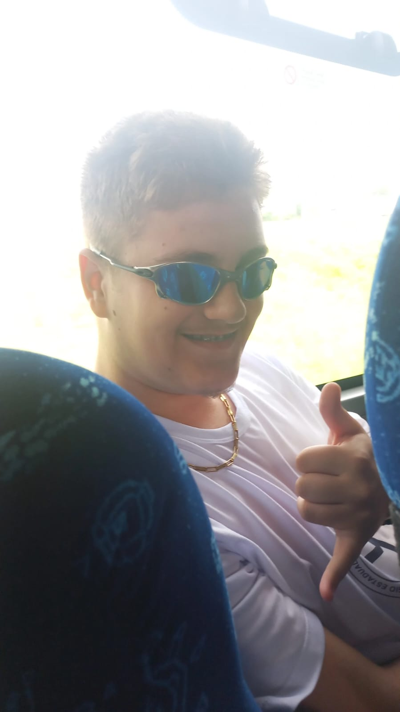
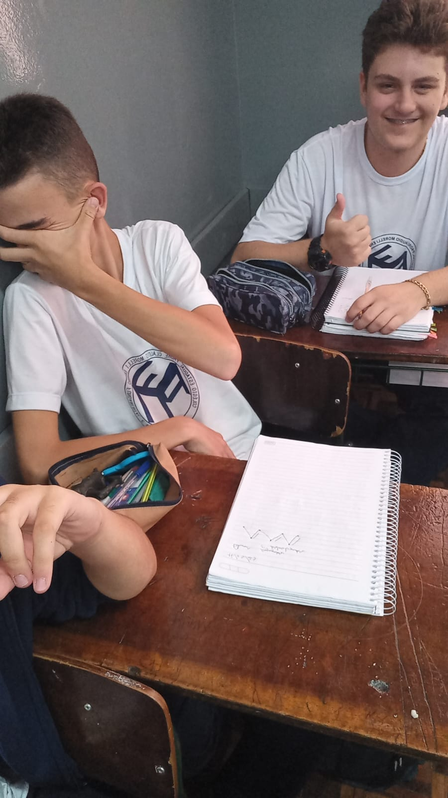
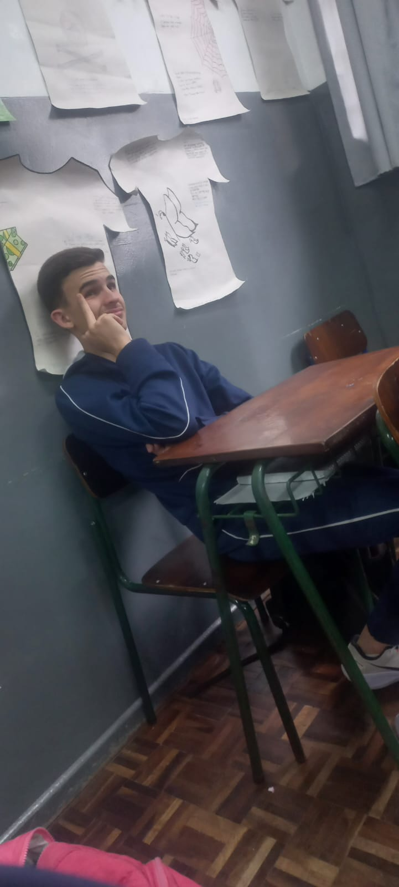
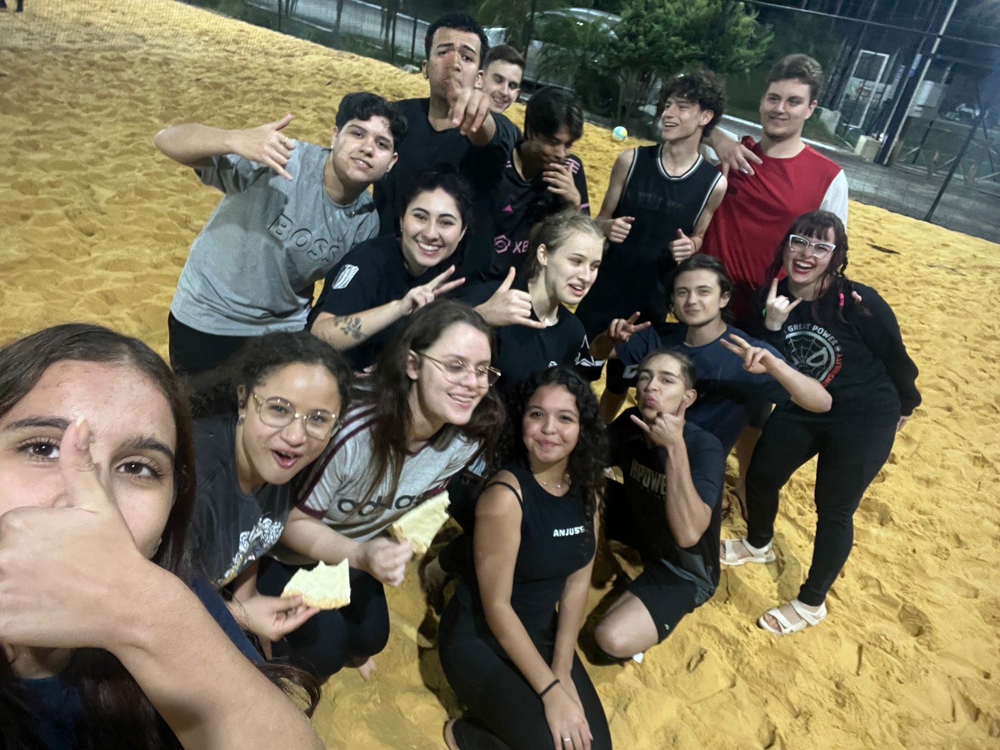
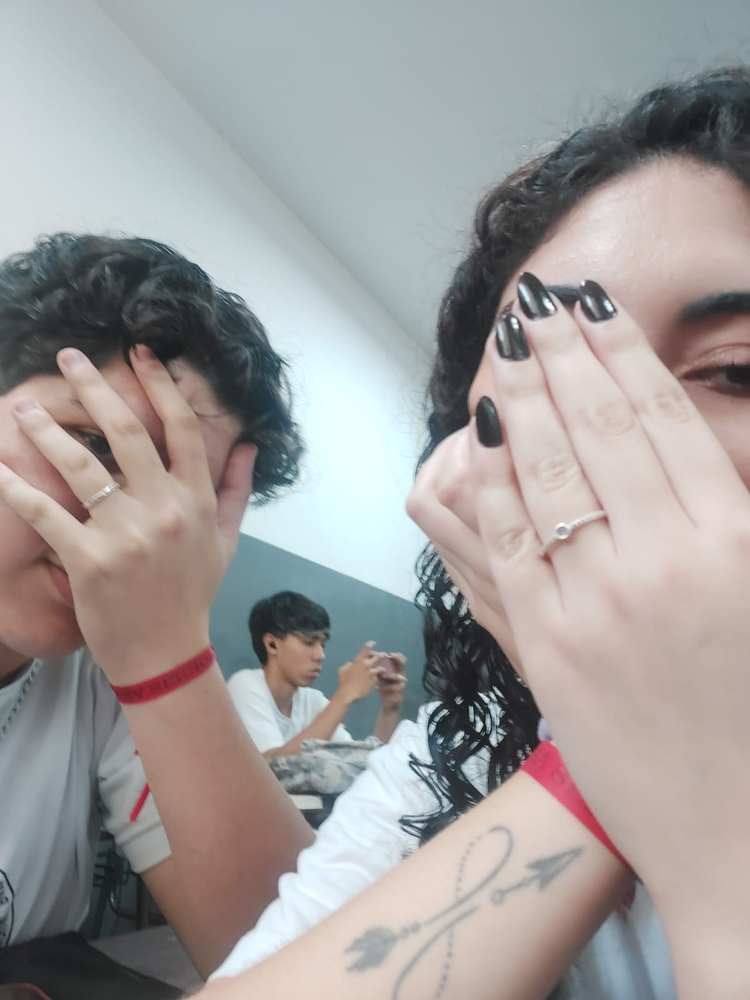

29/03/2023 - O dia que o Nabosne virou um pouco mandrake no caminho de ida para a volvo

16/032023 - O que rolou com o Fernando? Sei lá, mas é isso...

17/09/2024 - O Fernando sendo Fernando, me mandando pra aquele lugar com cara de nojento

22/06/2024 - O dia que o grupo Baixa Renda se juntou para jogar queimada e comer um pouco(10 pizzas)

15/04/2024 - E não poderia faltar a minha melhor lembrança, quando eu e a Dayane começamos a nos relacionar(Obrigado nhoque!)
